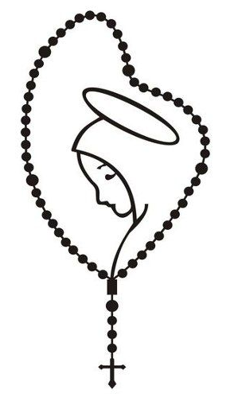

👩⚖️ Most-used access
PETICIONES AL SANTO ROSARIO PARA EVITAR LA DESTRUCCIÓN DEL GENERO HUMANO
Main Spanish document, preserved intact inside a featured card.
Click here >👩⚖️ Main documents
The central access points preserve your main materials exactly as they are, now presented inside a more structured, clearer landing page that is much closer to the reference site style.
Main Spanish document, preserved intact inside a featured card.
Click here >English version presented with the same visual priority and the same strong entry point.
Click here >👩🏫 Complementary framework
The technical resource and social links are still present, but now reorganized as a cleaner support block that stays more consistent with the reference site's visual language.
👩🔎 Other quick links
✝️ Christianity
The main landing page now directly indexes the Christianity Information System site inside the wider Informática y Buen Gobierno ecosystem.
Introduction
On its current front page, https://www.informaticaybuengobierno.org/christianity/ presents itself as a Christian information system structured around a main dashboard, a thematic search tool, and a set of modules that make content exploration more organized and more useful than a traditional static page.
The site's visible navigation organizes access to areas such as Bible, Rosary, Doctrine, Mariology, Popes, Saints, Structure, and History, while also showing a catalog-oriented and content-administration approach for exploring Christian information in a systematic way.
👩🦳 Bilingual reflection
The Spanish and English readings remain available, but now live inside a cleaner, more legible section format that is much more aligned with the reference site's card-based structure.
👩🦳💗

A central visual axis with a softer, more feminine tone, without losing the solemn character of the content.
👩🔎 Directory
The remaining links and sections are still available, but they are now presented in a more orderly grid that stays more coherent with the reference visual style.